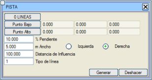

Bu araç, aşağıdaki iletişim kutusu aracılığıyla girilen bir dizi veriden yola çıkarak harita üzerinde servis yolları oluşturmayı sağlar:
- Servis yolunun uygulanacağı çizgiler; bu çizgiler sabit kota sahip olmak koşuluyla herhangi bir tipte olabilir. Aslında, farklı kotlara sahip köşe noktaları içeren çizgiler seçilirse, program bunları kullanmaz.
- Servis yolunun başlangıcı olan alt nokta. Düğmeye basıldığında en düşük kottaki çizgi vurgulanır ve üzerine, servis yolunun başlangıcını belirtecek bir noktaya tıklanmalıdır.
- Servis yolunun yükseldiği yönü belirlemeye yarayan üst nokta. Düğmeye basıldığında en yüksek kottaki çizgi vurgulanır ve üzerine bir noktaya tıklanmalıdır.
- Servis yolunun genişliği. Sağ ve Sol seçenekleri, diğer kenarın göreli konumunu tanımlar, bu da servis yolunun yarmada mı yoksa dolguda mı yapılacağını belirler.
- Bu çizgilerin değiştirilmesini etkileyecek, servis yolunun uçlarından ölçülen, eşyükselti eğrileri üzerindeki etki mesafesi.
- Servis yolunun kenarlarını çizmek için çizgi tipi.
Çizgiler seçildikten sonra, diğer parametrelerden herhangi biri değiştirildiğinde, bunun servis yolunun geometrisini nasıl etkilediği grafiksel olarak görülebilir. Bazen şevin geometrisi nedeniyle, servis yolunun güzergahı üst nokta kotuna ulaşmadan aniden kesilir, bu nedenle girilen değerlerden bazılarının değiştirilmesi ilginç olabilir.
[Oluştur] seçeneği servis yolunun geometrisini sabitlerken, [Geri Al] seçeneği bu değişiklikleri ortadan kaldırır ve haritayı önceki durumuna döndürür.
|